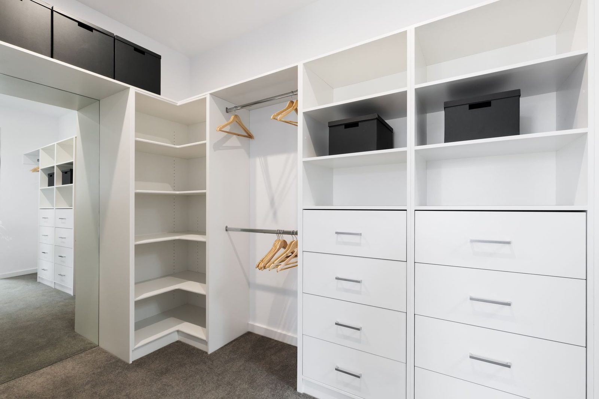
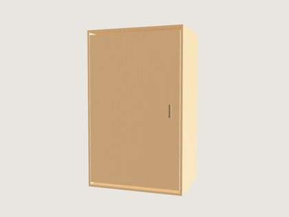

Closed door
A slab front across the whole section, from the toe kick to the top shelf. Dust out, mess hidden, and a flat wall where you want one.
The whole section, as a front
A front covers the opening from the toe kick to the top shelf. It is not a half: a door across the top with drawers showing underneath is not something any shop builds.
What this piece needs
| Where it goes | The whole section, as a front |
|---|---|
| Height | 12 to 84 inches, cut to the real opening |
| Construction | Slab, three quarter inch, every edge banded |
| Hinges | Concealed, soft close, adjustable in three directions |
| Handle | Your pick from the handles tab, or a push catch and none at all |
| Color | Picked separately from the carcass |
Every one of these feeds the price. Change a number in the 3D builder and the parts list and the total change with it.

A front covers the whole section
A door goes across the entire opening, floor to top shelf. The builder will not put one across half a section with drawers showing underneath, because no shop builds that and the result looks like a mistake.
If you want a door over the top half only, that is two sections: a short one with a door and a separate one underneath with the drawers.
When a door is worth it
In a bedroom, for the section holding the things you do not want to look at. In a garage, for everything, because a garage run with open shelves becomes a display of paint tins.
In a pantry, for the bottom sections, so the floor of the room reads as cabinetry while the food you reach for stays visible above.
A door is also the single cheapest way to make a run look like furniture rather than shelving.
Dust is the real argument
An open shelf in a closet collects a visible layer of dust in a season, and everything on it has to be wiped before it is worn. A closed section does not.
That matters most for the things you use least, which is also the stuff on the highest and lowest shelves. Those are the sections to put a door on if you are only doing some.
Questions about this piece
If yours is not here, the answer is a phone call away. Ask us directly.
Can I have a door over just the top half?
Not within one section. A front covers the whole opening. For a door above and drawers below, use two sections stacked, which is what gets built anyway.
What hinges do you use?
Concealed soft close, adjustable in three directions so the gaps stay even after the house moves.
Can the door be a different color from the inside?
Yes. The carcass and the fronts are picked separately in the builder.
Do I need a handle?
No. A push catch gives a completely flat face. Otherwise pick a handle on the handles tab.
Is a door more expensive than leaving it open?
Yes, it is board plus hinges plus a handle. It is also the cheapest thing that makes a run read as furniture.
Put it in a section, and see the price.
The builder opens with this piece already in a section. Change the width, the color and the hardware and the total moves with it.